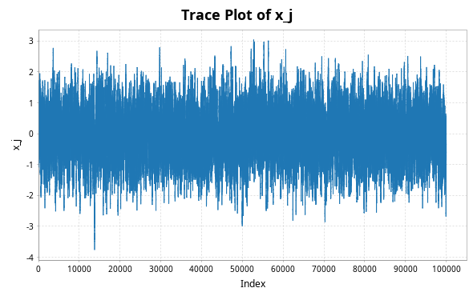

(and improve you Statistical programming while doing it)
This presentation isn't about you being lazy, it's about your programs being lazy: Lazy Evaluation.
Roughly speaking, we make sure our programs only actually evaluate anything when we absolutely need to.
if condition:
really_easy_computation()
else:
really_hard_computation()
Let f be some function. The function is
f' is evaluatedf' might not be evaluated upon evaluating 'f'.
Lets say we have two functions, 'bool_func_1' and 'bool_func_2' which output booleans. We want to do an 'OR' statement, something like
bool_func_1() or bool_func_2()
But if 'bool_func_1()' evaluates to 'True', then we don't need to compute 'bool_func_2' at all, since we already know that the whole expression is 'True'!
Consider the operator '|' in python, which can be used for 'OR' statements. This operator is not lazy!
We can demonstrate this by using booleans with print statements embedded
def bool_func_1():
print("bool_func_1 was evaluated")
return True
def bool_func_2():
print("bool_func_2 was evaluated")
return False
result = bool_func_1() | bool_func_2()
print(result)
bool_func_1 was evaluated bool_func_2 was evaluated True
The '|' operator in python is not lazy!
However, the 'or' operator is lazy (yes, there is a difference between these two!)
result = bool_func_1() or bool_func_2()
print(result)
bool_func_1 was evaluated True
It is often said that the 'or' operator is short-circuiting, while '|' is not; what this really means is that 'or' is lazy!
Let's quickly go back to the motivating example, but let's also place some dependance on a variable 'x';
if condition(x):
really_easy_computation(x)
else:
really_hard_computation(x)
Lets say 'condition(x)' really was 'False', and so we have to do the hard computation, 'really_hard_computation(x)'.
What if, in the future, 'really_hard_computation(x)' is called again?
Once 'really_hard_computation(x)' is computed, its value is stored in a lookup table.
| Function | Value | Result |
|---|---|---|
'really_hard_computation' |
'x' |
'<Result>' |
'really_hard_computation' |
'y' |
'<Result>' |
'really_hard_computation' |
'z' |
'<Not Computed>' |
| \(\vdots\) | \(\vdots\) | \(\vdots\) |
For this to work completely we need referential transparency, which is another can of worms, and can be somewhat painful to work around in statistical settings.
There are other functions in python which are lazy, for example, 'and' is (but '&' is not), and also any 'if' 'else' statements.
However, the arguments passed into user-defined functions are always evaluated in python;
def my_or_function(bool1, bool2): return bool1 or bool2
We know 'or' is lazy, so passing through 'bool_func_1, bool_func_2' should only evaluate 'bool_func_1' and then 'short circuit' right?
print(my_or_function(bool_func_1(),bool_func_2()))
bool_func_1 was evaluated bool_func_2 was evaluated True
the arguments are evaluated as soon as they are passed through a function, before the function is even run!
Say we want to do something over a range in R, but there was some 'break' condition somewhere;
for i in 1:1000000
do_something_interesting
if (condition){
break
}
When '1:1000000' is called, the entire list '[1,2,3,...,1000000]' is stored in memory, because the range in R is not lazy!
If the condition ended up being true at the 100th loop, then we really didn't need to store the other 999900 integers. If range was truly lazy, then nothing would be stored in memory until it was actually used, and in memory the list might appear like '1,2,3,...,99,100,<not computed>'.
Indeed, this is exactly how Lists work in a purely functional and lazily evaluated language like Haskell, or specific objects like 'LazyList' work in Scala, or even the 'range' operator in python.
Consider a program you've likely coded up before; the fibonacci sequence. Here is a relatively standard way of doing it, in Scala.
val n = 10
val fibs1 = new ListBuffer[Long]
fibs1 += (0,1)
for (i <- (1 to n)){
fibs1 += fibs1(fibs1.size-1) + fibs1(fibs1.size-2)
}
fibs1
//res0: ListBuffer(0, 1, 1, 2, 3, 5, 8, 13, 21, 34, 55, 89)
def fibFrom(a: Long, b: Long): LazyList[Long] = {
a #:: fibFrom(b, a + b)
}
val fibs2 = fibFrom(0,1)
//val fibs2: LazyList[Long] = LazyList(<not computed>)
'fibs2' represents the whole infinite sequence of fibonacci numbers! To get the nth value, is to simply extract it from the infinite list
fibs2(30)
// val res0: Long = 832040
or we can take the first n elements of the list
fibs.take(30).toList
//val res12: List[Long] = List(0, 1, 1, 2, 3, 5, 8, 13, 21, 34, 55, 89, 144, 233, 377, 610, 987, 1597, 2584, 4181, 6765, 10946, 17711, 28657, 46368, 75025, 121393, 196418, 317811, 514229)
In the programming language Haskell, this can look even cleaner
fibs = 0 : 1 : zipWith (+) fibs (tail fibs)
This is very similar to how we would define the Fibonacci sequence in a mathematical language;
\[\begin{aligned} x_0&=0\\ x_1&=1\\ x_{n+1}&=x_n+x_{n-1} \end{aligned}\]
In statistics so many things are infinite sequences MCMC algorithms come to mind in particular.
Imagine code where a fixed sample size is not needed; we can represent infinitely many samples in a variable, and always just pick out however many we may want!
For example, lets take a simple metropolis sampler. For the simple case of a Gaussian target \(\pi \sim\mathcal N(0,\Sigma)\) with mean \(0\) and variance \(\Sigma=M^TM\) where \(M_{ij}\sim\mathcal N(0,1)\), and we use the proposal as uncorrelated gaussians, \(q_n(x,\cdot)\sim\mathcal N_p(x, \lambda^2 Id)\).
In Scala, a Metropolis-Hastings sampler for this might look like this;
def one_MH_step(x: DenseVector[Double],
r: DenseMatrix[Double],
q: DenseMatrix[Double]
): DenseVector[Double] = {
val proposed_move = x.map((xi:Double)
=> Gaussian(xi, 0.01/d.toDouble).sample())
val alpha = 0.5 * ((x.t * (r \ (q.t * x)))
- (proposed_move.t * (r \ (q.t * proposed_move))))
val log_acceptance_prob = math.min(0.0, alpha)
val u = rng.nextDouble()
if (math.log(u) < log_acceptance_prob) then proposed_move
else x
}
Once we've chosen a, initial value, we can the define the rest of the infinite chain using a operation 'LazyList.iterate' in scala
mh_sample = LazyList.iterate(x0)(
(x:DenseVector[Double]) => one_MH_step(x,q,r))
We can, of course, do the usual stuff on this list, like compute estimates
val n = 100000
val xsum = mh_sample.take(n).foldLeft(
DenseVector.zeros[Double](d))(_+_)
val xxtvals = mh_sample.map(
(x: DenseVector[Double]) => x * x.t)
val xxtsum = xxtvals.take(n).foldLeft(
DenseMatrix.zeros[Double](d,d))(_+_)
val sample_var = (xxtsum :*= 1/n.toDouble)
- ((xsum * xsum.t) :*= 1/(n*n).toDouble)
// 0.5798798360620974 -0.25268806862366644 -0.23151583712649304
// -0.25268806862366644 2.3148740685967075 1.5463449917637646
// -0.23151583712649304 1.5463449917637646 1.5615727189017325
And we can plot things as normal (here I'm using my own 'plotter' function to simplify things);
plotter(mrth_sample, n, 0, "./MHplot.png")

The scala and python code for the presentation, as well as the presentation itself, is available on my github, github.com/tatephughes/.
I would encouredge you to take a look at Haskell; it can be tough to get your head around and realistically isn't practical for statistical modelling, but it teaches some valuable lessons which could prove helpful for programming in the languages you do use!